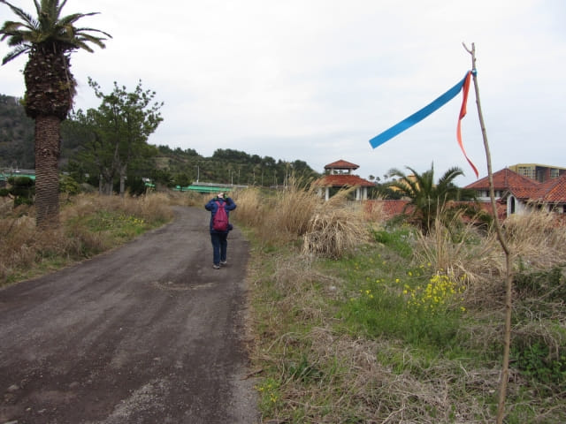
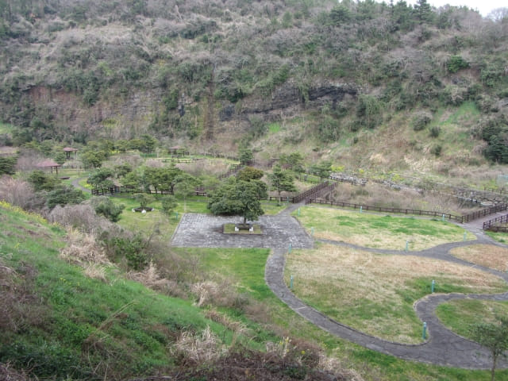
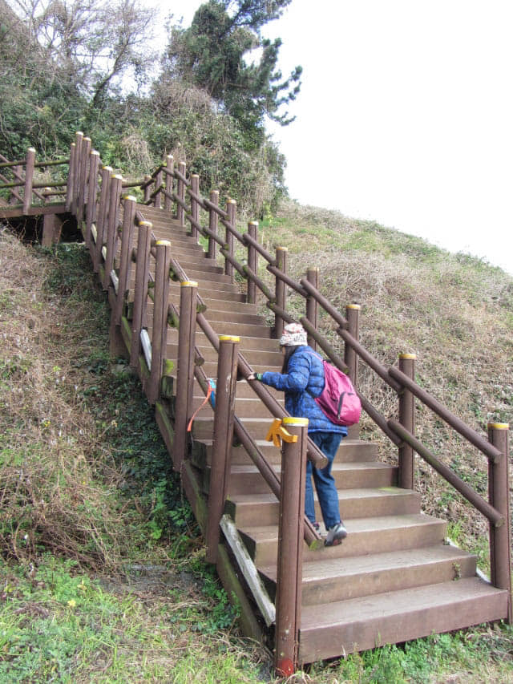

在充滿熱帶風情的濟州太平洋樂園流連了半小時, 望望手錶, 剛好是下午四時, 接著打算繼續沿偶來8號小路朝大浦海岸柱狀節理帶的方向走。望望四周, 沒有偶來小路的標誌, 有點迷路的感覺, 便四處尋找, 最後終於看到熟悉的藍橙色箭頭標誌, 便安心繼續行程。
離開濟州太平洋樂園, 繼續按偶來小路的標示走, 接著是一段頗為荒蕪的道路。

走了一會, 再看不到偶來小路標誌, 感覺走錯了路, 便馬上掉頭, 才發覺剛才看不到地上頗不起眼的標誌和右邊的小路。
接著循右邊的小徑往下走。
從行車天橋下穿過, 開始進入了山區。
放眼遠望, 腳下是星川峰下的優美溪谷及公園。

沿彎彎曲曲步道走下, 來到溪谷中的公園。
穿過溪谷中的公園, 走過橫躺星川兩岸的拱形木橋。
星川峰入口
離開木橋, 轉右沿星川畔走一會, 左邊有一道樓梯, 彎彎曲曲延伸往山上, 這裡便是星川峰的入口。看看地圖, 沿樓梯往上走便可抵達星川峰山頂。
